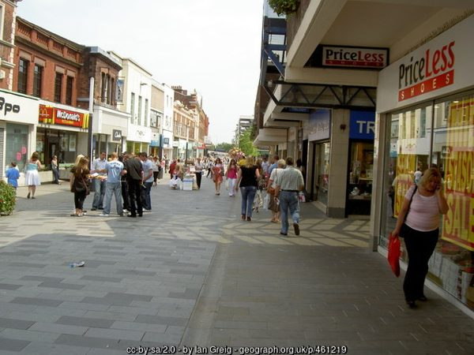
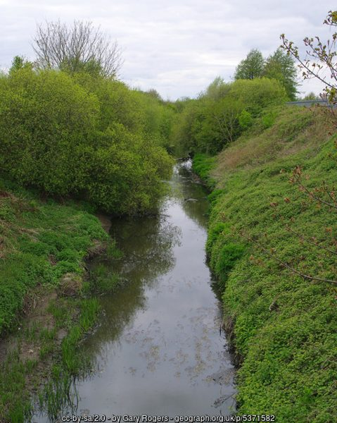
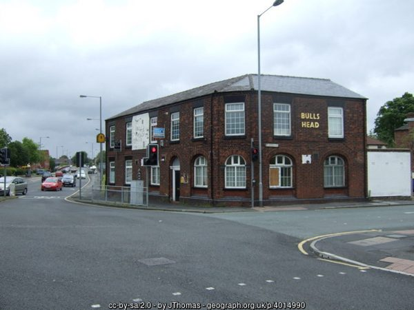

Parr - take a fresh look
To many people, Parr in St Helens might not be their ideal choice of a tourist destination, but if you scratch below the surface, you’ll find that there’s far more to this overlooked area than meets the eye.
The quaint suburb of Parr lies approximately 1 mile east of St Helens Town Centre, with it’s historic centre and vibrant nightlife. Follow the signs to Newton le Willows from the town centre and you’ll soon arrive in the semi-rural idyll that is Parr.
More of a rustic village than a suburb, Parr offers a tranquillity that helps the weary traveller forget about all the cares of the world. Take a look around the ‘period style’ shops

Photo (2007) © Ian Greig, Geograph, CC BY-SA 2.0
and marvel at the charming crafts and curios that are displayed in the windows. Why not visit one of the areas many famous hostelries, such as the Hen and Chickens or the Blood Tub, for a relaxing drink or meal with friends or chill out in the cool waters of Parr baths.

Photo (2017) © Gary Rogers, Geograph, CC BY-SA 2.0
For the nature lovers out there, Parr certainly won’t leave you disappointed. Why not take a stroll along the banks of ‘Stinky Brook’where you’ll find several varieties of wild flowers and other items. Breathe in the clear air and wonder at the joy of being alive in such a wonderful place.
For the more adventurous tourists, there are lots of action sports that you can participate in. Regular motor cycle events are held on the local fields. Just bring your own motorbike, or ‘borrow one’ from the generous locals. If cars are more your thing, historically-traditional races are regularly staged, where the locals race around the locality in an attempt to ‘out-wit’ the local constabulary. Once again, vehicles can be ‘borrowed’ from around the area to enable you to join in these exciting activities.
Having enjoyed a relaxing or exciting day, once the sun goes down, Parr really comes alive.

Photo (2014) © JThomas, Geograph, CC BY-SA 2.0
Near to the area’s ancient wine merchants, you will see many of the younger locals enjoying chatting together and catching up on the days activities, whilst the adults prefer to sup a small glass of the local speciality beverages before retiring to bed after an action packed day. Alternatively, if you like to be entertained, why not take in a show at one of the famous Labour clubs? You’ll be amazed at the quality of the artists, and all at a price that will suit the pocket.
Whatever your taste, we’re sure that you’ll find what your looking for in the beautiful place that is Parr.